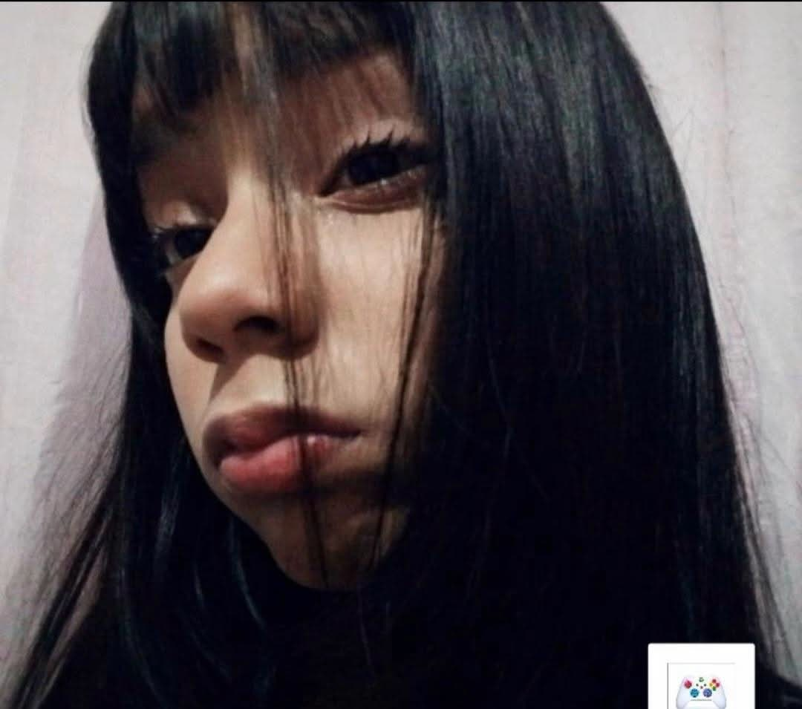
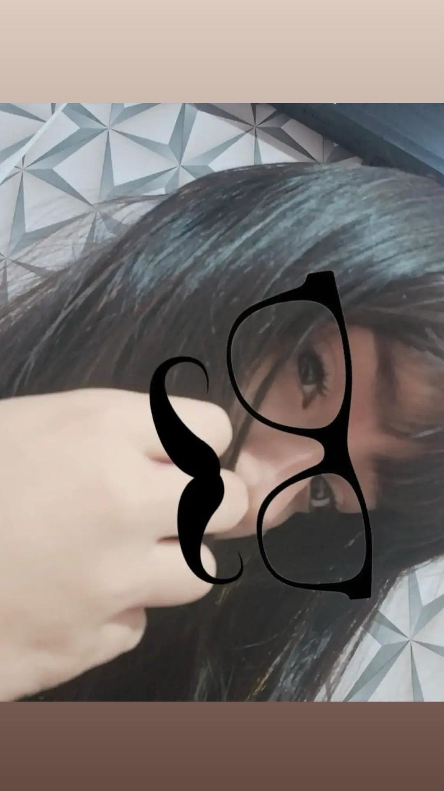
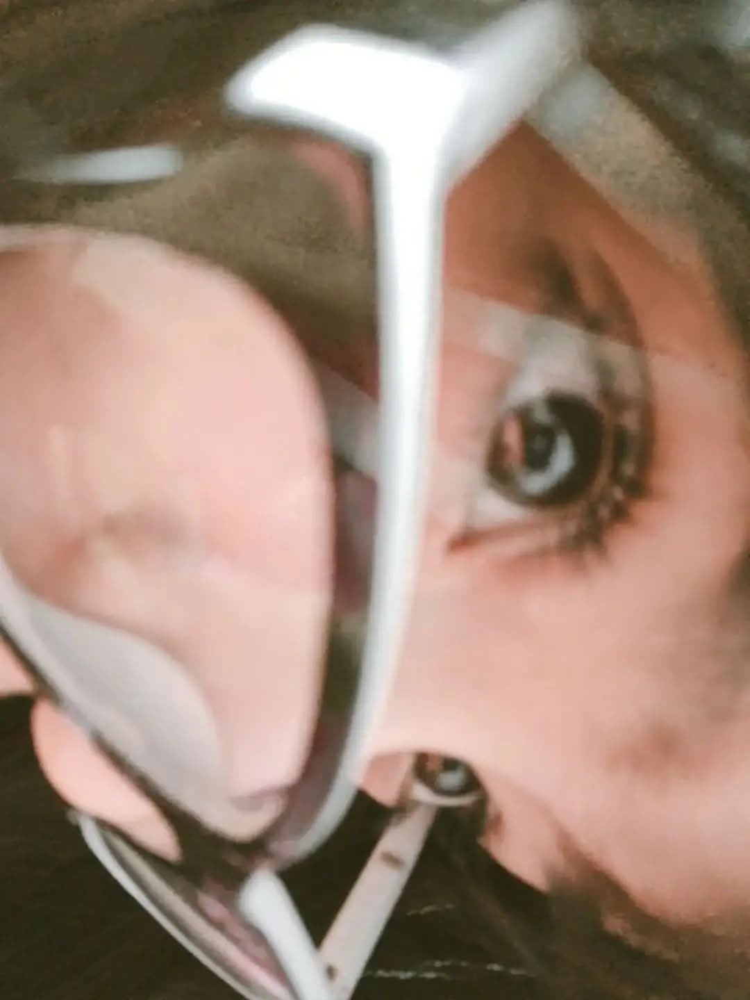

cherished moments
Foi aqui que tudo começou, Ana. Sem perceber, eu já estava criando as minhas memórias favoritas ao seu lado.
Foi nos pequenos detalhes que eu comecei a perceber o quanto você fazia bem pra mim, minha flor.

Entre conversas, risadas e momentos simples, começou a nascer a nossa história.
Quanto mais o tempo passava, mais eu queria estar com você. Você virou o meu lugar favorito.
Em meio a tantos lugares, você continuou sendo o meu favorito, meu amor.
A sua presença não pede licença: ela é cláusula pétrea na ordem do ambiente.
(Cláusulas pétreas são as leis máximas de uma Constituição que ninguém, em hipótese alguma, pode mudar ou apagar.)
Você é o ponto de singularidade onde todas as minhas leis da física deixam de fazer sentido.
(Singularidade é o coração de um buraco negro, onde o tempo e o espaço mudam as regras.)

O universo tende ao caos, mas a sua presença é a única força que gera entropia reversa.
(A segunda lei da termodinâmica diz que tudo no universo tende à bagunça, a entropia. Você é a única que consegue colocar ordem no meu caos.)
Tem gente que parece luz até debaixo do sol mais forte. Você é minha luz, princesa.

Em meio a tanto caos, você me fez entender o que é amar.
"Every moment with you becomes a memory I want to keep forever.
Thank you for filling my life with so much love, Ana."